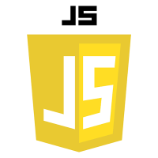
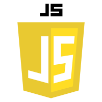

General Information: Oriented programming language developed by Sun Microsystems in 1995. The name of the founder is James Gosling. It is a compiled language that is designed to be portable, which means that it can be run on any platform that has a Java Virtual Machine (JVM) installed. In other words, an important feature of Java is that it is a platform-independent language. Java emphasizes the use of objects to represent data and functionality. The language contains vast library of classes and Application Programming Interfaces (APIs) that can be used to build a wide range of applications that are not only desktop softwares but also Android mobile apps and enterprise-level web applications. In 2010, Oracle acquired Sun Microsystems and owned Java's copyright.
Contrasting with C/C++: Unlike the C/C++ compiler, which links source code directly into machine language, the Java compiler generates a byte code, class file (.class) that has to be read and executed in machine language via JVM.